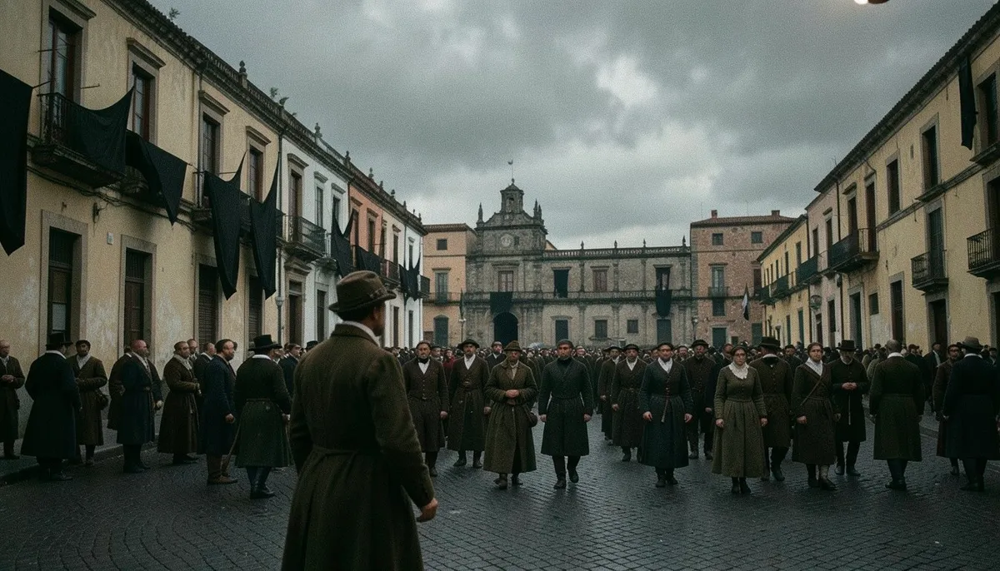

OKpolítico
OKpolítico1819 (II): La Limpieza en el Bajío y el Trueno en los Andes
▶ Ver este video en YouTube y suscríbete

Segundo tercio de 1819: la capital finge normalidad con honras fúnebres mientras en el Bajío cae 'El Giro' y en los Andes Bolívar gana Boyacá. La insurgencia suriana resiste, la hacienda real se agota y el Tratado Adams-Onís espera ratificación. El virreinato entra en otoño con la tropa inquieta y l
Compartir por WhatsAppApertura: Honras en la capital, sombras en la sierra
El 17 de julio de 1819, la Ciudad de México amanece bajo un cielo gris de luto oficial. El virrey Juan Ruiz de Apodaca preside en la catedral las honras fúnebres por María Isabel de Braganza, segunda esposa de Fernando VII, fallecida en Madrid meses atrás.
El ceremonial, con salvas de artillería y tejidos negros cubriendo las fachadas, proyecta la imagen de un virreinato leal, pacificado y reintegrado a la monarquía restaurada. Mientras la capital gasta sus recursos en incienso y luto, la realidad en las provincias es de una tensa calma que oculta el desgaste financiero de la Corona.
✉️ Recibe lo importante del día en tu correo. Suscríbete gratis →La administración de Apodaca intenta proyectar estabilidad, pero el costo de mantener los destacamentos militares para vigilar los caminos del Bajío y el Sur está agotando las arcas reales,
mientras que en Europa, la falta de apoyo de la Santa Alianza y la disolución de la Cámara Introuvable en Francia años atrás dejaron a España sin el respaldo internacional esperado para sofocar las rebeliones americanas de forma definitiva.
Sin embargo, dos semanas antes de las honras en la capital, a más de 300 kilómetros al noroeste, en el rancho de San Nicolás, en la actual Yuriria, Guanajuato, el coronel realista Anastasio Bustamante tiende una emboscada a Andrés Delgado, conocido como 'El Giro'.
El guerrillero, que operaba en la sierra de Guanajuato desde 1817 y representaba uno de los últimos focos de resistencia activa en el corazón agrícola del país, muere el 3 de julio. Con su caída, el realismo celebra lo que considera la 'limpieza' del Bajío.
Bustamante, consolidando su prestigio militar, elimina a un líder que, aunque aislado, mantenía viva la llama de la insurgencia en una zona vital para el abastecimiento de la capital. No obstante, la muerte de Delgado no extingue el sentimiento de agravio en las poblaciones rurales,
que simplemente pasan de la insurgencia abierta a una resistencia pasiva o al bandidaje social, esperando un nuevo liderazgo. Guadalupe Victoria, el otro gran sobreviviente de la etapa de resistencia, no aparece en los partes oficiales durante 1819; para la administración,
es un fantasma; para la sierra, sigue siendo el jefe invisible que sostiene la red de correos y abastecimiento. Mientras en la Nueva España se celebra la aparente pacificación, el tablero internacional se sacude.
El 22 de febrero de 1819 se firma el Tratado Adams-Onís, donde España cede las Floridas a Estados Unidos para intentar salvar Texas. Pero el golpe más duro viene del sur: el 7 de agosto, Simón Bolívar triunfa en la Batalla de Boyacá.
Esta victoria no es solo un evento lejano; para los estrategas en México, significa que la Nueva Granada es libre y que el Caribe ya no es un lago español seguro. La ruta de suministros y refuerzos desde la península queda amenazada. El virreinato de Apodaca,
que se cree victorioso por la muerte de 'El Giro', ignora que el aislamiento de México ha comenzado y que la economía estadounidense, golpeada por el Pánico de 1819, empezará a presionar con más fuerza sobre las fronteras novohispanas. La paz es solo una fachada de papel.
Situación política: La fachada apodacista y el desgaste real
El virrey Juan Ruiz de Apodaca gobierna bajo la doctrina de 'paz y unión': indultos selectivos, milicias urbanas financiadas por el comercio y una administración que presume de normalidad tributaria. En junio, la Corona confirma a Manuel Isidoro Pérez Sánchez como obispo de Oaxaca, reforzando el pilar eclesiástico del orden.
Pero los informes reservados que llegan a su mesa desde la comandancia general de Veracruz y la intendencia de Puebla hablan de despoblados incontrolados, contrabando de pólvora y una red de 'correos' insurgentes que une la sierra de Guerrero con la huasteca y el centro.
Esta aparente calma ignoraba las presiones externas; años atrás, la política española se había visto sacudida por sectores radicales, pero para 1819, Apodaca intenta proyectar que el virreinato es el bastión más seguro del imperio,
a pesar de que la realidad en los caminos dicta lo contrario. La economía, aunque algunos sectores mineros intentaban estabilizarse, seguía asfixiada por los gastos de una guerra que no termina de morir,
sino que se ha fragmentado en guerrillas locales imposibles de erradicar por completo con los recursos actuales. El 30 de noviembre, Apodaca ordenó multar a dos damas de la capital por corresponderse con Guerrero; en el periodo de mayo a agosto, esa correspondencia ya fluía por canales clandestinos.
El virrey sabe que la 'pacificación' es un espejismo sostenido por la falta de grandes batallas, pero debilitado por la ausencia de refuerzos peninsulares: el ejército expedicionario que se alista en Cádiz no zarpó,
retenido por la penuria hacendaria y el descontento de la tropa que eventualmente estallará en 1820. Mientras tanto, en el sur, Vicente Guerrero mantiene la resistencia política y militar, aunque se avecinan meses difíciles que culminarán en enfrentamientos como el de Agua Zarca en noviembre.
La estrategia de Apodaca de 'limpiar' el Bajío logra un éxito mediático el 3 de julio, cuando Anastasio Bustamante logra abatir a Andrés Delgado 'El Giro' en Yuriria. Con esta muerte, el gobierno virreinal celebra la eliminación del último gran foco de insurgencia organizada en Guanajuato,
intentando convencer a la opinión pública de que la insurgencia ha sido degradada a simple bandidaje, ocultando que la estructura de apoyo civil en las rancherías permanece intacta y lista para reaccionar ante cualquier cambio en la metrópoli.
Mientras la Nueva España se concentra en sus conflictos internos, el 7 de agosto de 1819 ocurre un evento que cambia la geopolítica del continente: la Batalla de Boyacá. Simón Bolívar logra una victoria decisiva que sella la independencia de la Nueva Granada. Para el virreinato novohispano,
esto no es solo una noticia lejana; representa la pérdida de control español sobre el Caribe sur y el establecimiento de un precedente de victoria republicana que anima a los círculos liberales en México. Al mismo tiempo, la diplomacia se mueve en el norte. El Tratado Adams-Onís, firmado en febrero, define las fronteras con Estados Unidos.
Aunque España cede las Floridas para asegurar Texas, la ratificación se retrasa en Madrid. Este vacío legal y la debilidad de las fronteras permiten que expediciones filibusteras, como la de James Long documentada en fuentes contemporáneas,
intenten penetrar en territorio texano, demostrando que el control territorial del virrey es más nominal que real en las periferias. El verano de 1819 termina así con una corona que celebra funerales de reina en la capital,
pero que en los Andes y en las fronteras del norte ve cómo los cimientos de su imperio se desmoronan silenciosamente.
Personajes del trimestre: Verdugos, fantasmas y fugitivos
En el Bajío, la figura de Anastasio Bustamante, originario de Jiquilpan —en la entonces Intendencia de Valladolid—, que ascendió en las filas realistas combatiendo a los primeros insurgentes, se consolida como el brazo ejecutor del virrey Apodaca.
El 3 de julio de 1819, tras semanas de seguimiento y el uso de informantes, Bustamante localiza el refugio de Andrés Delgado, apodado 'El Giro', en el Rancho de San Nicolás, cerca de Yuriria.
La operación es quirúrgica: una emboscada que termina con la vida de uno de los últimos líderes rebeldes con capacidad de movilización en Guanajuato. Este éxito militar no solo pacifica temporalmente la zona, sino que catapulta la carrera de Bustamante,
quien décadas después sería presidente y marcaría la historia con el polémico proceso que llevó a la ejecución de Vicente Guerrero en 1831, operado por su ministro de Relaciones, Lucas Alamán.
Pedro Ascencio Alquisiras, lugarteniente de Guerrero en la zona de Taxco e Iguala, participó en acciones contra las columnas realistas; no se cuenta con evidencia documental de un cruce del río Mezcala en octubre de 1819.
Guadalupe Victoria, en la selva veracruzana, no combate en campo abierto; su guerra es logística y simbólica. Los partes realistas de mayo a agosto no registran acciones suyas,
pero la persistencia de la red de abastecimiento hacia el sur y la imposibilidad de los insurgentes de capturar San Juan de Ulúa —último bastión realista en el golfo— demuestran la resistencia realista. Para algunos historiadores, la "invisibilidad" de Victoria refleja la dificultad de los realistas para eliminar al insurgente,
obligando al virrey a mantener guarniciones costosas en puntos fijos sin poder golpear un objetivo móvil. Mientras la Nueva España intenta proyectar una imagen de orden, el panorama internacional es turbulento.
En Estados Unidos, el Pánico de 1819 —la primera gran crisis económica de esa nación— comienza a asfixiar el crédito y el comercio fronterizo. En febrero, se firma el Tratado Adams-Onís, donde España cede las Floridas a cambio de que Washington reconozca la soberanía española sobre Texas.
Sin embargo, el documento es un papel frágil: la ratificación se retrasa en Madrid debido a las tensiones políticas que preludian el levantamiento de Riego. Esta parálisis diplomática es aprovechada por expediciones filibusteras, como la de James Long, que ven en la debilidad virreinal una oportunidad para separar Texas,
obligando al ejército realista a distraer tropas que bien podrían estar combatiendo a Guerrero en el sur. El agotamiento no es solo militar, sino financiero.
El virreinato gasta sumas exorbitantes en mantener guarniciones fijas para proteger convoyes de plata, mientras la recaudación cae por la parálisis agrícola. A esto se suma el impacto psicológico de las noticias que llegan del sur del continente: el 7 de agosto,
Simón Bolívar derrota decisivamente a las tropas realistas en la Batalla de Boyacá. La caída de la Nueva Granada no es un evento aislado; para los estrategas en la Ciudad de México,
significa que el flujo de tropas de refuerzo desde la península podría verse interrumpido si los puertos del Caribe caen en manos patriotas. La 'paz' de 1819 es, en realidad, un equilibrio precario sostenido por el cansancio, pero amenazado por un entorno global que ya no favorece al absolutismo de Fernando VII.
Conflictos: La muerte del 'Giro' y el trueno de Boyacá
El 3 de julio de 1819, en el rancho de San Nicolás, dentro de la jurisdicción de Yuriria, Guanajuato, el destino de la insurgencia en el Bajío sufrió un golpe definitivo. Una partida realista al mando del coronel Anastasio Bustamante —originario de Jiquilpan, en la entonces Intendencia de Valladolid,
y quien más tarde llegaría a ocupar la presidencia de la República— sorprendió a Andrés Delgado, conocido popularmente como 'El Giro', junto a su pequeña escolta. Delgado no era un militar de carrera,
sino un caudillo que conocía cada palmo del terreno y que había logrado mantener en jaque a las fuerzas virreinales hostigando haciendas y cortando las rutas de suministro hacia la capital. Su muerte en el tiroteo fue celebrada en los partes oficiales como la eliminación de un 'salteador' y 'bandido',
una etiqueta común que el virrey Juan Ruiz de Apodaca utilizaba para deslegitimar a los rebeldes. Sin embargo, para los habitantes de la región, 'El Giro' representaba la resistencia popular. Con su caída,
Bustamante no solo consolidó su prestigio militar ante los ojos de la Corona, sino que permitió al virreinato proclamar una pacificación casi total en el corazón agrícola del país,
aunque la semilla de la insurgencia permaneciera latente en el descontento social. Mientras en el Bajío se silenciaba un foco rebelde, en las alturas de los Andes estallaba un trueno geopolítico que resonaría hasta las costas de Veracruz.
Simón Bolívar, tras un cruce heroico y devastador por la cordillera en plena estación de lluvias, inició una ofensiva relámpago. El 11 de julio venció en Gámeza y el 25 de julio, en la épica batalla del Pantano de Vargas, sus tropas —exhaustas y superadas en número— lograron romper la línea realista.
El clímax llegó el 7 de agosto en el puente de Boyacá. A solo 122 kilómetros de Santafé de Bogotá, la rendición absoluta del general realista José María Barreiro entregó el corazón de la Nueva Granada a las fuerzas patriotas.
Bolívar entró triunfante en Bogotá pocos días después, proclamando la creación de la República de Colombia, hoy conocida como la Gran Colombia. Este evento no fue solo una victoria militar local; fue el colapso de un virreinato entero,
demostrando que el imperio español era vulnerable y que la marea de la independencia era ya irreversible en el sur del continente. La noticia de la caída de Bogotá tardó semanas en cruzar el Caribe, viajando en los navíos de la Armada y los correos marítimos que conectaban los puertos de Cartagena y Veracruz.
Cuando el virrey Apodaca recibió finalmente los partes, la preocupación se instaló en el Palacio Real de la Ciudad de México. El virreinato de Nueva Granada no era un territorio menor; funcionaba como una fuente vital de oficiales experimentados, reclutas y, sobre todo,
de los 'situados' o recursos financieros destinados a sostener la guerra contra los insurgentes en diversas partes de América. Con la victoria de Bolívar, el imperio perdía una pieza estratégica fundamental. Para los observadores más agudos de la época,
la independencia de la Nueva Granada cortaba simbólicamente la ruta de refuerzos y suministros, dejando a la Nueva España como el último gran bastión continental que la Corona española debía defender a toda costa,
en un momento en que sus propias finanzas estaban al borde del colapso. A pesar de las noticias alarmantes del exterior y la persistente resistencia de Vicente Guerrero en las montañas del sur,
en la Ciudad de México la vida cortesana se esforzaba por proyectar una imagen de normalidad y lealtad absoluta. El 17 de julio de 1819,
la capital se vistió de luto para realizar fastuosas honras fúnebres en honor a la reina María Isabel de Braganza, segunda esposa de Fernando VII, fallecida meses atrás.
El contraste era brutal y casi surrealista: mientras el virreinato agotaba sus últimos recursos financieros y la estructura imperial se desmoronaba en los Andes, las autoridades gastaban fortunas en incienso, cera y ritos de fidelidad a una monarquía que perdía el control de sus dominios más ricos.
Esta 'paz' virreinal era una fachada. Bajo la superficie, el sistema se asfixiaba; el Tratado Adams-Onís, firmado en febrero, ya había cedido Florida a los Estados Unidos a cambio de una soberanía sobre Texas que se antojaba frágil,
y la falta de pagos comenzaba a minar la moral de las tropas realistas que pronto escucharían los ecos de la revolución en la propia España.
Economía y sociedad: Plata, papel y el pánico del norte
Según estimaciones de historiadores, la minería, motor fiscal del virreinato, muestra signos de agotamiento: los rendimientos de plata por tonelada habrían bajado en Zacatecas y Guanajuato,
mientras el azogue (mercurio) —monopolio real— escaseaba y encarecía el beneficio de patio. El comercio de importación, gravado por el consulado de México, sufre la presión del contrabando en diversas rutas, que la debilidad naval española no puede cerrar totalmente.
El Pánico de 1819 en Estados Unidos, que comenzó en enero, generó incertidumbre internacional; aunque la historiografía señala que no tuvo un impacto directo inmediato en el crédito novohispano,
las tensiones por la escasez de plata y el aumento de precios del maíz reflejaban la fragilidad de las finanzas del virreinato. Mientras la economía cruje, la guerra de guerrillas cobra una víctima de alto perfil. El 3 de julio,
el coronel realista Anastasio Bustamante —nacido en Jiquilpan, entonces parte de la Intendencia de Valladolid— logra lo que otros no pudieron: localizar y abatir a Andrés Delgado, apodado 'El Giro',
en el rancho de San Nicolás. Con su muerte, el Bajío pierde a uno de sus últimos líderes operativos, permitiendo al virrey Juan Ruiz de Apodaca proclamar una pacificación que, aunque efectiva en los mapas, ignora el resentimiento social acumulado.
Relaciones internacionales de México: La frontera en el papel y en el terreno
El Tratado Adams-Onís, firmado el 22 de febrero de 1819, fija la frontera en el río Sabina y el paralelo 42 norte, cediendo las Floridas a EE. UU.
Las Cortes españolas lo ratifican el 24 de octubre de 1820, y el intercambio de ratificaciones se completa el 22 de febrero de 1821. En el terreno, la soberanía en Texas es nominal: la expedición de Francisco Xavier Mina (1817) y la posterior de James Long (1819,
iniciada en junio desde territorio estadounidense) demuestran que ni el virrey ni el comandante general de la Frontera del Norte controlan la región. Long, exoficial del ejército de EE.
UU., declara la independencia de Texas en Nacogdoches el 23 de junio; aunque es dispersado por tropas realistas en octubre, el episodio revela la porosidad de la frontera acordada en el papel.
El mundo en 1819: Revolución en Europa, imperio en América
En España, Fernando VII gobierna como absolutista tras su vuelta en 1814: la Constitución de 1812 queda sin vigor y la Inquisición es restaurada. En Cádiz, un ejército reunido para embarcar hacia América se amotinaría ya en enero de 1820 bajo el mando de Rafael del Riego,
un levantamiento que abriría el Trienio Liberal y cambiaría el destino de las colonias. En Inglaterra, el 16 de agosto, la caballería carga contra una manifestación pacífica en St.
Peter's Field, Manchester: la masacre de Peterloo (15 muertos, cientos de heridos) radicaliza al movimiento obrero y obliga al gobierno de Lord Liverpool a reprimir la prensa y las reuniones públicas. En Francia, Luis XVIII intenta un constitucionalismo moderado bajo la Carta de 1814,
mientras los sectores ultrarrealistas —que habían dominado la Cámara Introuvable disuelta en 1816— presionan por una política exterior activa en apoyo al absolutismo borbónico en el continente. En Sudamérica, la victoria de Boyacá (7 de agosto) consolida la independencia de la Nueva Granada.
La República de Colombia es creada por el Congreso de Angostura el 17 de diciembre. San Martín prepara en esos meses su expedición al Perú.
Mito vs. Historia documentada: ¿Pacificación o mutación de la guerra?
Una lectura frecuente de 1819 lo presenta como un año de pacificación casi completa: Morelos había sido fusilado en 1815, Mina en 1817 y, durante ese año, el insurgente Andrés Delgado, 'el Giro', fue emboscado y muerto en Guanajuato.
El Anexo sobre México en 1819 recoge esa impresión: los españoles parecían recuperar nuevamente el control de la Nueva España, mientras que en otras partes de América perdían terreno frente a las revoluciones de independencia de Sudamérica.
En el sur seguía levantado Vicente Guerrero, a quien esa misma fuente describe como el principal jefe insurgente aún en armas. En febrero de 1819, Guadalupe Victoria fue visto en Paso de Ovejas, Veracruz, y después no se volvió a tener noticias de él en mucho tiempo.
La cronología indica que, ya derrotado, continuó escondido en la sierra de Veracruz y realizó apariciones esporádicas. Desde el 5 de enero, además, Pascual Liñán había sido designado para el mando militar de la provincia de Veracruz.
Lo que registra la cronología del año es más matizado. El Anexo define 1819 como un año de resistencia en la Guerra de independencia, con pocos actos militares sin consecuencias importantes.
Seguían levantados Vicente Guerrero, Pedro Ascencio y el Giro, y Guadalupe Victoria permanecía oculto. La misma fuente añade que la derrota de Guerrero en Agua Zarca, ya hacia el final del año, aniquiló casi por completo su movimiento en el sur.
En julio, cuando cae el Giro, ese desenlace todavía no había ocurrido. El 22 de febrero de 1819, España firmó con Estados Unidos el Tratado Adams-Onís en Washington.
Por ese acuerdo cedía Florida a los norteamericanos a cambio de conservar la soberanía sobre Texas como parte del virreinato de la Nueva España. El tratado no se ratificó ese año: las Cortes del Trienio Liberal lo hicieron el 24 de octubre de 1820.
La cronología señala que Estados Unidos incrementaba entonces su interés en Texas. El 17 de julio de 1819, poco tiempo después de la caída del Giro,
se llevaron a cabo en la Ciudad de México honras fúnebres en honor de la reina María Isabel de Braganza, segunda esposa de Fernando VII.
La capital del virreinato conmemoraba un duelo de la monarquía mientras en Guanajuato se cerraba un episodio de la guerra.
Consecuencias: El tablero se mueve hacia 1820
Al cerrar agosto de 1819, tres hilos empiezan a converger. Primero, la insurgencia del sur sigue en pie: Vicente Guerrero conserva mando y territorio, aunque hacia finales de 1819 sufrirá un duro revés en la batalla de Agua Zarca, que lo llevará a prolongar la guerra de guerrillas.
Segundo, la victoria de Bolívar en Boyacá, el 7 de agosto, sella la independencia de la Nueva Granada y pone ante la Nueva España un ejemplo en el continente: otro territorio de la Corona que había roto con la metrópoli.
Tercero, en España el ejército expedicionario reunido cerca de Cádiz para ser enviado a América se desgasta, y su sublevación de enero de 1820 llevará a Fernando VII a jurar la Constitución de 1812 y abrirá el Trienio Liberal.
Esa crisis de legitimidad en la metrópoli será el contexto en el que, en México, tome forma la conspiración de La Profesa y aparezca Agustín de Iturbide. Volvamos a la pregunta con la que empezamos.
El 3 de julio, el realista Anastasio Bustamante emboscó y mató al guerrillero Andrés Delgado, 'El Giro', en el rancho de San Nicolás, hoy Yuriria, Guanajuato. 14 días después, el 17 de julio, la Ciudad de México rendía honras fúnebres a la reina María Isabel de Braganza, segunda esposa de Fernando VII.
Y el 7 de agosto, en Boyacá, Bolívar aseguraba la independencia de la Nueva Granada. Ninguno de esos hechos, por sí solo, puso fin a la insurgencia: en el sur seguía activo Vicente Guerrero.
El virreinato entra en el otoño de 1819 sin que la guerra haya terminado. El próximo episodio verá qué ocurre tras Agua Zarca, cómo llega a Veracruz la noticia de la Constitución y cómo un coronel realista llamado Agustín de Iturbide empieza a ganar protagonismo,
hasta la consumación de la independencia en 1821. Bustamante y Guerrero volverían a enfrentarse, pero ya en el México independiente, a finales de la década de 1820.
Sigue viendo
Con información de
Del Arenal Fenochio, Jaime. Cronología de la Independencia (1808-1821). INEHRM, 2011. · Wikipedia. 'Anexo: México en 1819'. · Wikipedia. 'Tratado de Adams-Onís'. · Portal Académico CCH-UNAM. 'Tercera etapa: Resistencia'. · Wikipedia. '1819' (eventos globales). · Wikipedia. 'Independencia de México'. · Van Young, Eric. La otra rebelión: la lucha por la independencia de México, 1810-1821. FCE, 2007 (referencia historiográfica).